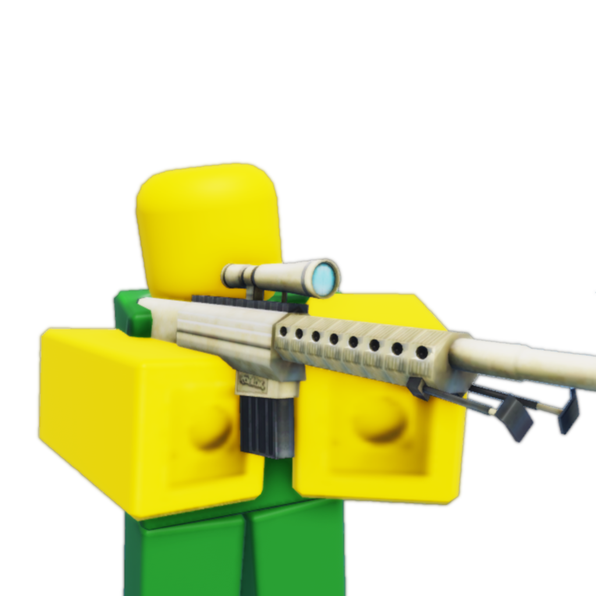
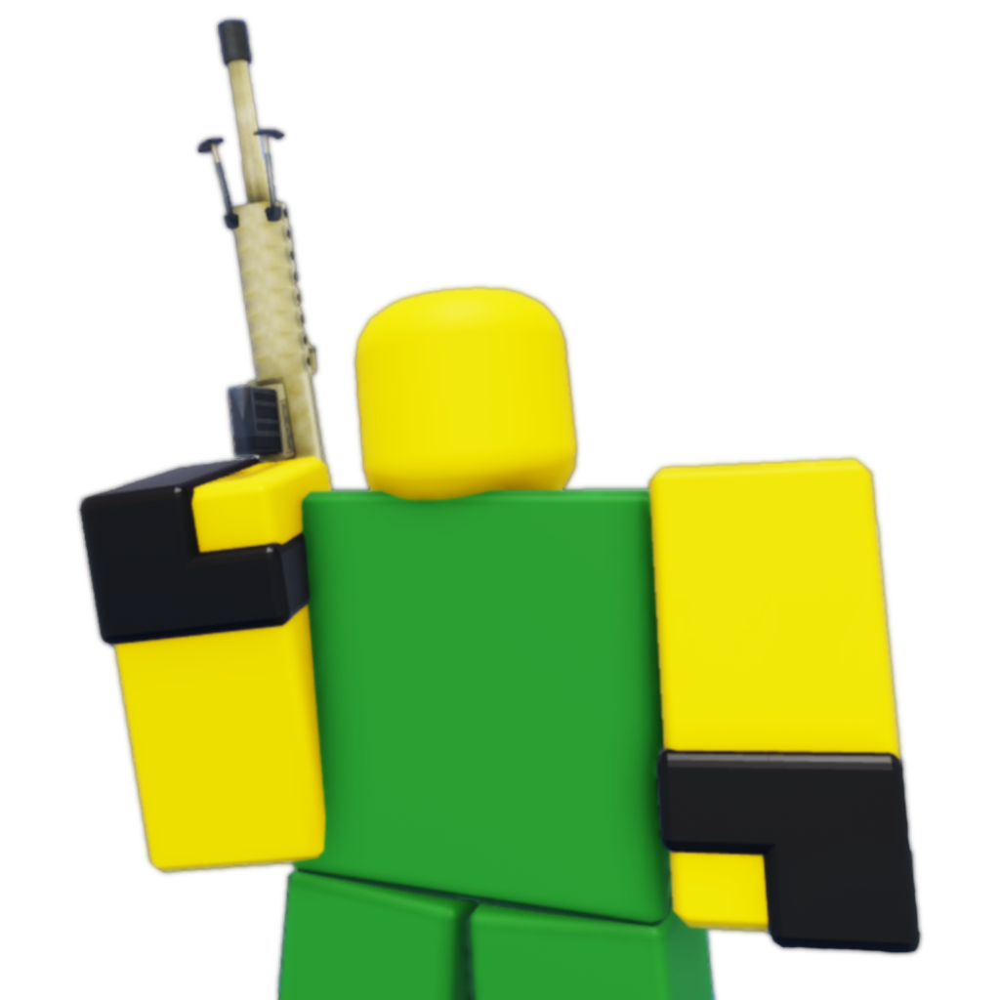
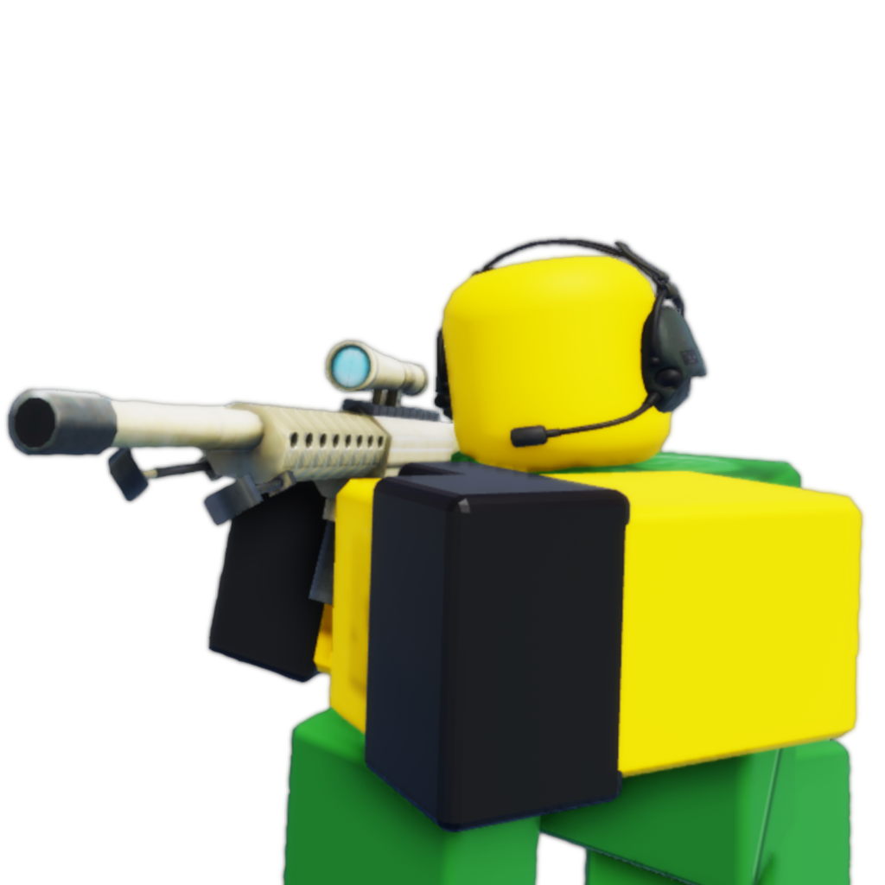
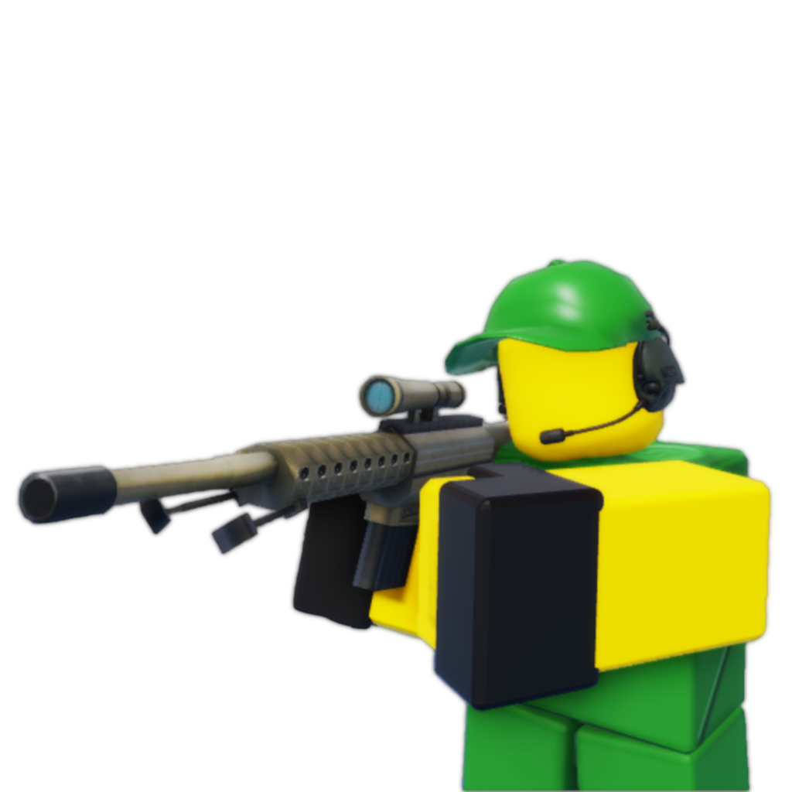

Sharpshooter
Sharpshooter
|

|
| Tix Cost |
100 |
| Level Required |
0 |
| Starting Cost |
$560 |
| Damage |
High (6) |
| Damage Type |
Single |
| Range |
Far (32) |
| Placement |
Cliff |
The Sharpshooter is a single target tower. At Level 1, the Sharpshooter fires every 3.2 seconds, with a
range of 32 and dealing 6 damage per shot (1.88 DPS). It costs 100 Tix and requires no level to purchase.
Appearance
The Sharpshooter appears as a green tower, wielding a M110 SASS.
Upgrades
Level 2 - Gloves 
Cost: $525
- Range increased from 32 to 37. (+5)
- Cooldown decreased from 3.2s to 3s. (-0.2s)
- DPS increased from 1.88 to 2. (+0.12)
- Sharpshooter now wears gloves.
Level 3 - Radio 
Cost: $700
- Range increased from 37 to 39. (+2)
- Sharpshooter now has hidden detection.
- Sharpshooter now wears a headset.
Level 4 - Accurate Aim 
Cost: $1500
- Damage increased from 6 to 14. (+8)
- Cooldown decreased from 3s to 2.7s. (-0.3s)
- DPS increased from 2 to 5.19. (+3.19)
- Sharpshooter now wears a hat and the M110 SASS is darker in colour.
Trivia
- The Sharpshooter was the first ever cliff tower to be made in Retro Defense.